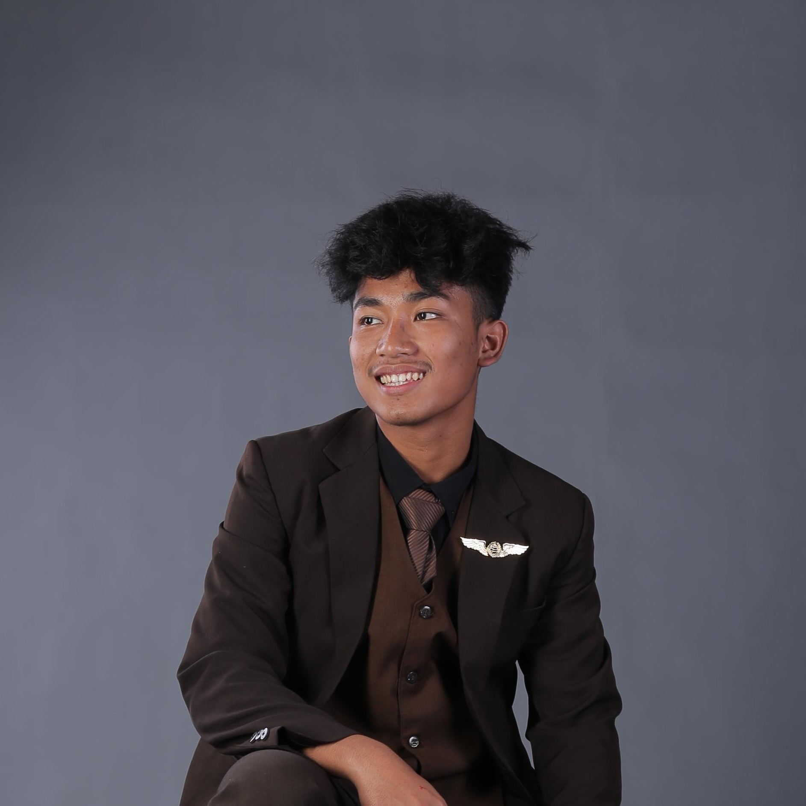
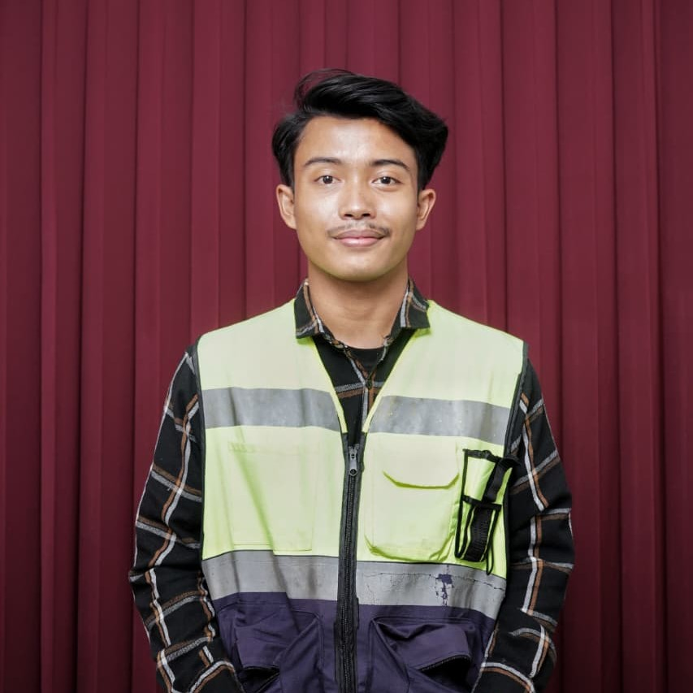
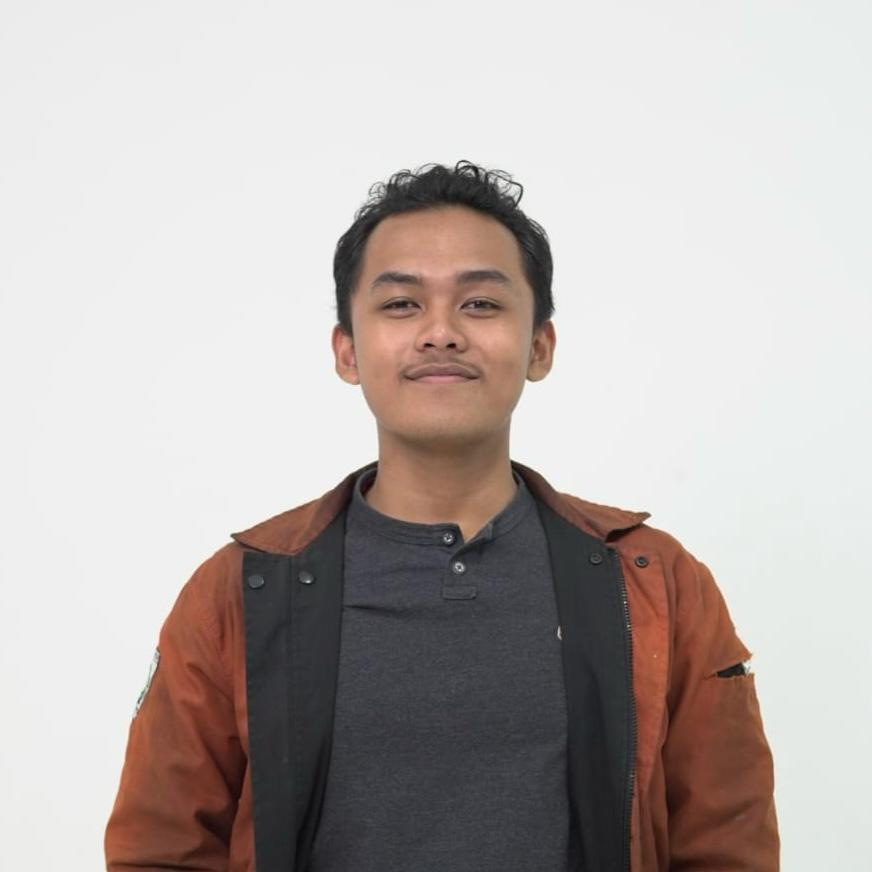
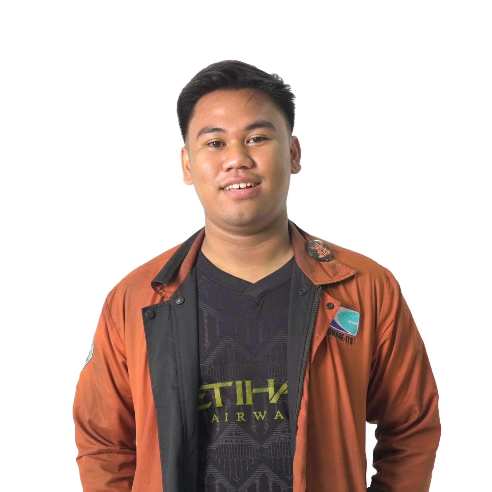

Building precision
is our mission.
PT. Nadirscope — solusi survey pemetaan terintegrasi: topografi, batimetri, LiDAR, dan GIS. Akurat, cepat, dan tepercaya.
Akurasi tinggi,
data spasial tepercaya.
PT. Nadirscope berdiri sejak 2026, mengkhususkan diri dalam survey pemetaan darat, udara, dan laut. Didukung oleh surveyor bersertifikat dan teknologi mutakhir seperti Total Station, Drone Lidar, GNSS RTK, dan Multibeam Echosounder.

Struktur Organisasi
Didukung oleh tenaga profesional berpengalaman di bidang survey dan pemetaan.

M. Nauvel Al abror
Manajer Perusahaan
nauvel@nadirscope.co.id

M. Ariel Fitrah Faishal
Surveyor
ariel@nadirscope.co.id

Dafa Rizky Nugraha
Asisten Surveyor
dafa@nadirscope.co.id

Abul Fahmi Attaftazani
Drafter
atta@nadirscope.co.id
Layanan Kami
Topografi & Geodesi
Pengukuran lahan, situasi detail, dan pemetaan kontur untuk perencanaan teknik sipil dan arsitektur.
Drone LiDAR & Fotogrametri
Pemetaan area luas cepat, data point cloud, orthophoto, dan DSM resolusi tinggi.
Batimetri & Hidrografi
Survei kedalaman laut, sungai, dan danau menggunakan singlebeam/multibeam echosounder.
GIS & Pemetaan Digital
Analisis spasial, pembuatan peta tematik, dan sistem informasi geografis berbasis web.
Perhitungan Volume
Kalkulasi cut and fill, stokpile tambang, dan galian timbunan dengan akurasi tinggi.
Konsultasi & Sertifikasi
Pendampingan teknis dan legalitas terkait pengukuran tanah dan sertifikat lahan.
Feature Projects

Departemen Teknik Geomatika ITS
Survey detail untuk pengembangan kampus terpadu seluas 45 hektar. Menggunakan drone LiDAR dan GNSS presisi tinggi.

Pelabuhan Internasional Patimban
Pemetaan dasar laut menggunakan multibeam echosounder untuk mendukung pengerukan alur pelayaran.

PT. Tambang Mineral Nusantara
Survey progress tambang dan perhitungan volume stockpile menggunakan drone fotogrametri.
Siap berkolaborasi?
Hubungi kami.
Tim surveyor kami siap mendiskusikan kebutuhan proyek Anda. Dapatkan konsultasi gratis.
Kirim Pesan
Lokasi Kantor Kami
Jl. Gebang Putih No. 62, Sukolilo, Surabaya, Jawa Timur 60117